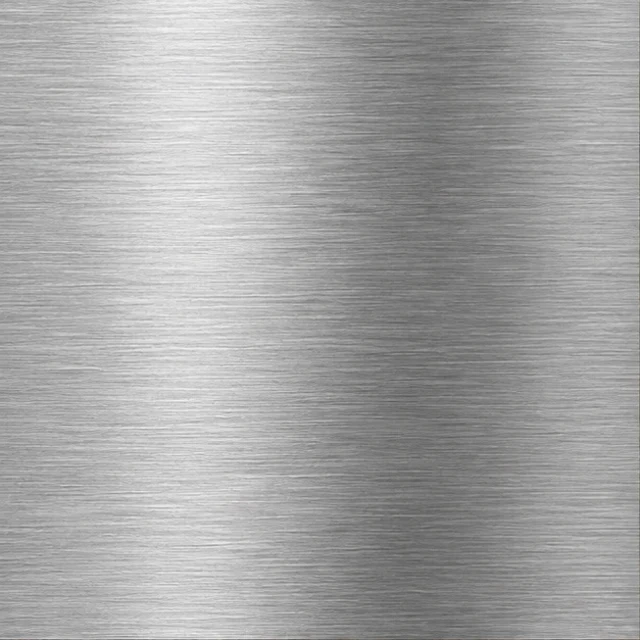
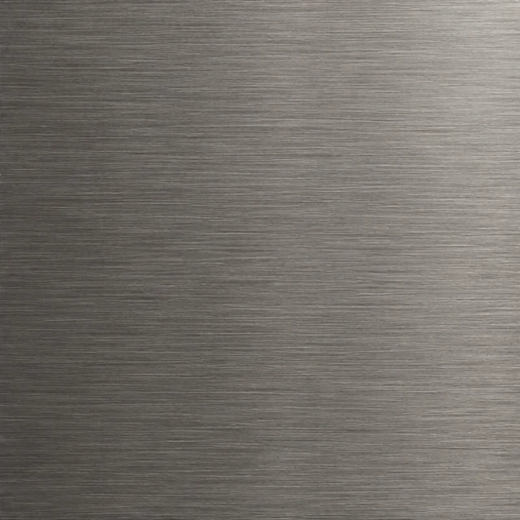
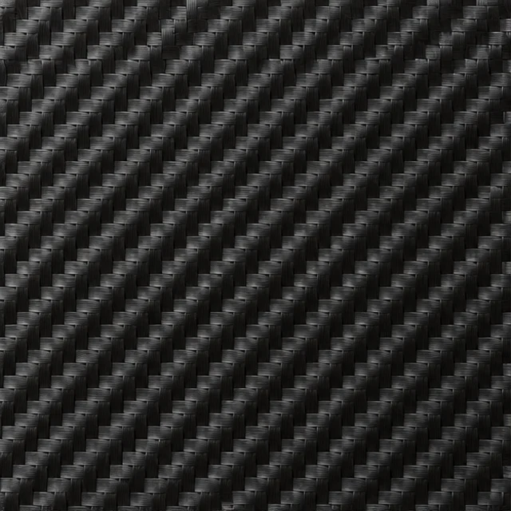
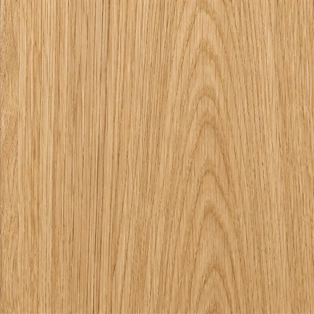
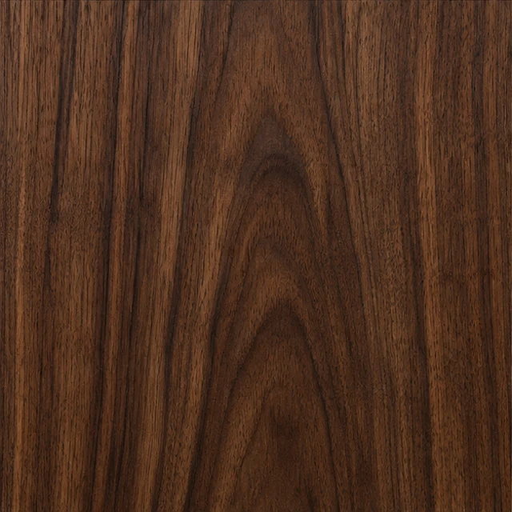
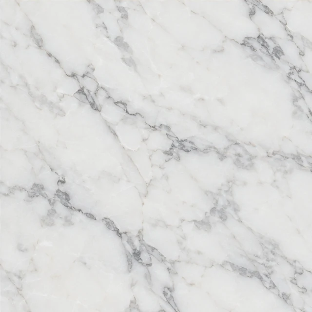
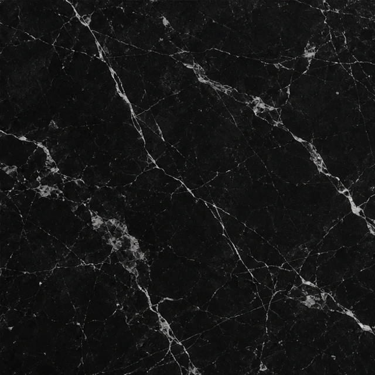
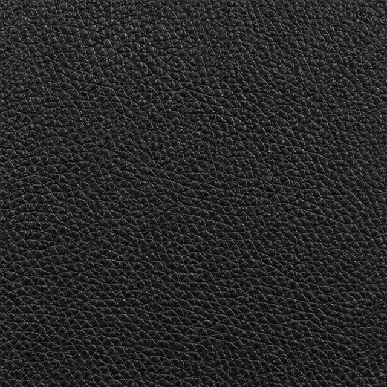

80 LOOKS. ONE HOME.
Find your kind of calm.
Warm and tactile. Dark and understated. A little colour, or a lot. Pick a skin to explore its palette in the interactive preview.
Cream
Actual app render. Each collection changes the control shapes, frames and materials.
80
Materials you can almost feel.
Eight locally bundled, photorealistic textures. Tap a material to inspect the grain, weave or veins. These are digital finishes for your panel.








Your home. Within reach.
Start with one panel. Make it feel like yours.